在本章中，我们将看到如何改进不同的模型，以及如何修改模型选项。我们还将学习如何使用不同的模型，并了解如何通过删除预测中不需要的预测因子来消除噪声。您还将了解如何为模型准备额外的数据，我们将了解如何添加额外的字段。最后，您将看到如何对不同类别的结果变量进行过采样和欠采样，从而使您最终使用的模型更好地理解数据。
以下是本章将涉及的主题，这些是可以改进模型的方法:
修改模型选项来改进模型是改进模型的直接方法之一。我们将借助一个示例来了解如何做到这一点:

结果清楚地表明，该模型是不一致的，因为在训练和测试数据集的准确率之间存在巨大的差异。但是，我们可以看到，测试百分比比我们在第2章机器学习入门中获得的线性模型的测试百分比要好，大约为73%。因此，也许多项式模型可以做得更好，但不是当前的模型，因为它是利用机会。
现在我们有了一个潜在的更好的模型，我们可以继续修改这个模型的设置。您可以转到SVM模型状态，在“专家”选项卡中，您可以看到度数被设置为3。对于我们现有的数据来说，这个三次函数有可能被证明有点复杂。让我们用一个二次函数来代替。将度数更改为2，然后单击运行。
再次，像我们一直做的那样运行分析，您会发现这些结果:

如你所见，两个数据集的准确率都在5%以内。因此，我们可以说这个模型是一致的。此外，我们还可以看到测试数据集的整体准确性有所提高。
这就是我们如何通过修改现有模型的选项来改进现有模型，以提供具有更高整体准确性和一致性的更好结果。
在上一节中，我们看到了如何通过修改选项来改进从模型中获得的结果。现在，我们将看到如何通过改变模型本身来改善结果。
每个模型看待数据的方式不同。他们有自己的算法。这些算法为我们提供了不同的视角来看待数据。有时候，仅仅改变看待数据的看法就能给我们带来更好的结果。不同的算法利用数据的独特方面。让我们借助一个示例来看看如何做到这一点:


C5.0模型是一个决策树模型，它从一个非常不同的角度来看待数据。
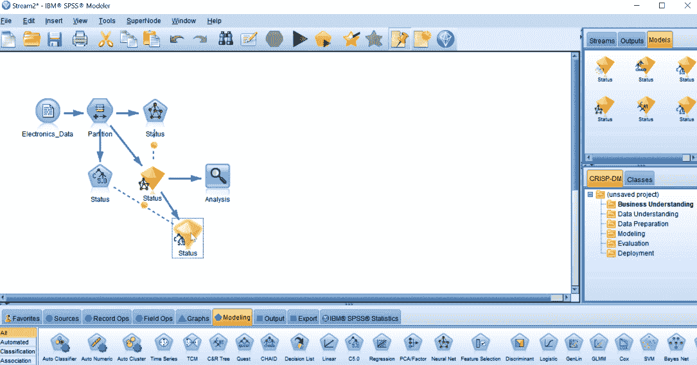

这将使我们能够非常容易地比较结果。

如您所见，使用C5.0模型的测试数据集的总体准确率为85%。这比我们仅用神经网络模型获得的要好得多。我们当然可以通过对C5.0模型进行一些修改来改进这一点，我将把这作为家庭作业留给你们。
因此，我们看到了C5.0模型如何略微改善了结果，并且在总体准确性以及训练和测试数据集的每个预测方面都做得很好。这只是提高模型性能的另一种方法的一个例子。现在，我们将了解如何从数据中去除噪声，从而获得更好的结果。
让我们来关注一下噪声是如何影响结果的。噪音只不过是丢失的数据、异常值或太多试图用不必要的预测混淆模型的预测器。
决策树模型没有噪音，因为有太多的预测器，因为默认情况下，与其他统计和机器学习模型相反，它们会消除不用于预测的预测器。
模型中有太多预测器会导致以下问题:
如果从模型中清除和排除这些类型的预测因素，这可以简化对模型的理解，并且可能会给出更好的结果。
我们借助一个例子来了解一下。请遵循以下步骤:

我们现在将移除变量，这些变量没有出现在任何模型中，或者只出现在少数几个模型中。

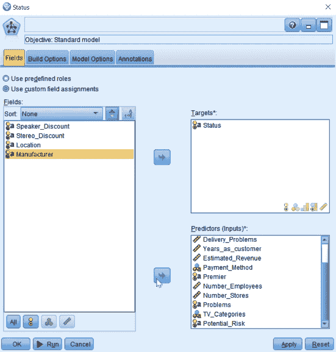
您只需从输入列表中单击预测值，然后单击指向左侧框的箭头。如果需要，您也可以使用相同的方法还原它们。这些变量没有出现在任何模型的前10名列表中。
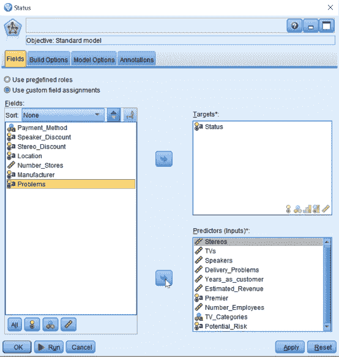


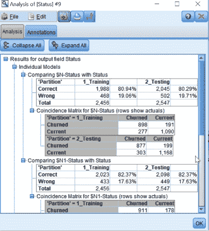
正如您所看到的，第二个模型的测试和训练数据集的整体准确性略好于第一个模型。因此，通过去除一些不必要的预测因素，我们获得了2%的可预测性改善。如果我们看到模型在预测每一个单独类别方面的工作，去除噪声的模型在这方面也做得很好。
因此，我们探索了另一种方法来改善从模型中获得的结果。我们看到了如何消除噪声，通过消除不必要的变量或预测因子来减少变量或预测因子的数量，从而给我们带来更好的结果。让我们继续看看另一种提高精度的方法。我们将看到在某种程度上准备数据如何能给我们带来更好的结果。
在本节中，我们将看到对数据所做的额外准备如何让我们提取额外的信息。
到目前为止，我们已经通过修改其选项、使用不同的模型、改变查看数据的角度以及去除噪声来改进我们的模型。虽然有时候，这些技术只会稍微改进模型；但是，如果您能够回到数据准备阶段，从数据中寻找可以提供更好结果的额外比特，这确实可以大大提高精度。
按照以下步骤在数据准备阶段准备数据:

派生节点允许我们创建额外的变量。

这意味着Total Items包括音响、电视和扬声器。您将在公式字段中得到一个表达式，如下所示:
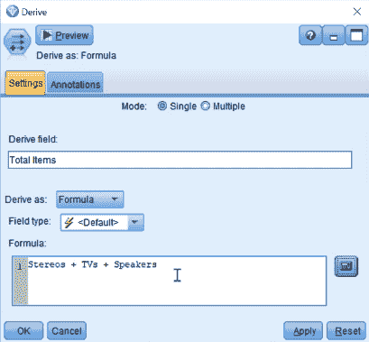
这是将用于Total Items的表达式。点击确定。
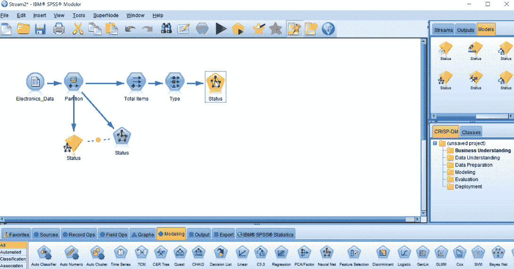
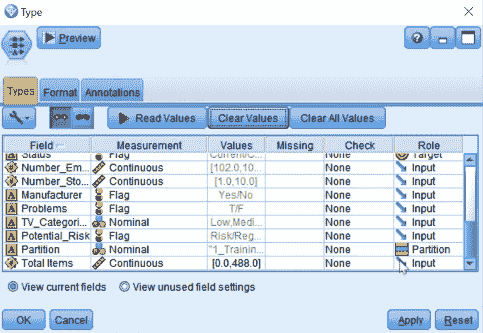
如您所见，现在已读取了总项目预测值，并且它将作为此模型中的输入预测值。点击确定。

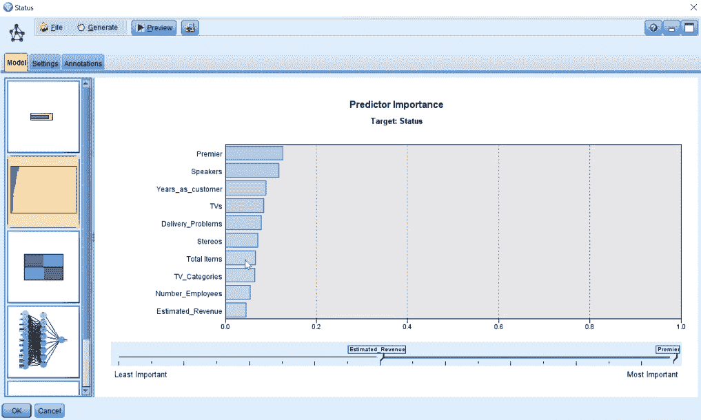
关上窗户。


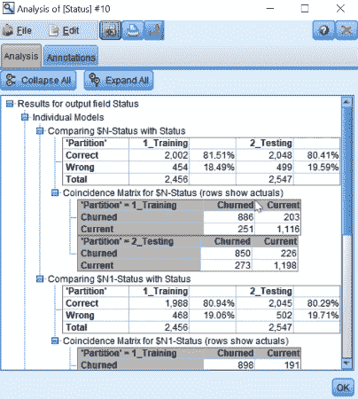
请注意，我们的精确度略有提高。我们只是在现有模型中添加了一个变量。因此，当我们在运行模型之前对数据做额外的准备时，我们知道我们的结果会受到怎样的影响。
说到Total Items如何帮助该模型，您可以看到它在预测当前客户方面所做的工作。我们实际上在预测当前客户领域方面做得更好。因此，这表明我们选择添加的新变量不一定会提高整个模型的准确性，但肯定会提高一个或多个预测类别的准确性。您可以决定哪个类别对您的需求更重要，并相应地选择一个新变量。我们现在将继续了解采样如何帮助我们提供更好的结果。
在本节中，我们将了解如何对结果变量的不同方面进行过采样或欠采样，以提高精确度。我们将改变我们的数据集来看到这一点。参考本书GitHub链接提供的Loan数据集。
为了演示这一点，我们将使用不同的数据集。选择Var。画布上的文件节点。通过点按文件栏旁边的三点，导航到文件所在的位置。然后选择Loan数据集:
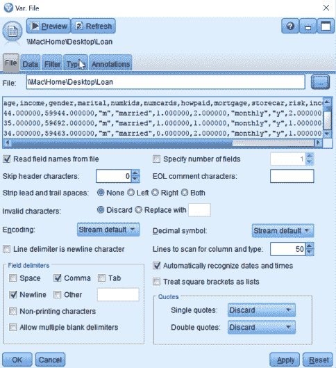
转到“类型”选项卡，将贷款预测者的角色更改为“目标”。这是我们将要预测的变量:

点击读取数值。然后，单击确定。在这个例子中，我们预测人们是否有贷款。
让我们看看贷款变量的分布。转到图形面板，将我们的源节点Loan连接到一个分布节点:

单击分发节点。然后单击字段框旁边的箭头，选择我们的预测值，我们需要查看它的分布，在我们的例子中是贷款:

然后，点击运行。您将看到以下分布:

注意这个数据集中86%的人有贷款，13%的人没有贷款。在这种情况下，预测没有贷款的人群可能有点困难，因为分布非常不均匀。因此，在这种情况下，我们需要平衡数据。这意味着在每一组的类别大小上要更加相似。这种数据平衡也称为过采样或欠采样。
让我们举一个更极端的例子。假设我们试图预测欺诈，数据集的分布是99%的情况完全合法，只有1%的情况是欺诈。现在，如果我们建立一个具有这种分布类型的模型，通常会发生的情况是，该模型会预测所有案例都不是欺诈性的。这种模型的总体准确性将是99%，因为99%的时间都是正确的，但我们真正关心的是预测那几个欺诈案件。如果我们总是预测我们有一个好的案例，那么你知道模型本身并不真的那么有用，即使它的总体准确率是99%。因此，有时模型的整体准确性并不那么有用。我们真正更关心的是预测每个单独类别的准确性。
像欺诈检测示例这样的情况会发生什么，因为一个组被过度代表，或者从技术上讲，另一个组或较小的组被代表，模型并没有真正了解较小的组的模式或特征，这就是为什么我们有时需要过采样或欠采样。
让我们回到我们的例子，试着看看我们能做些什么。
让我们首先建立一个模型来预测贷款，看看我们发现了什么:

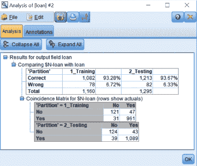
可以看到，模型的整体准确率在93%左右，模型相当一致。让我们看看模型对每一个类别的预测有多好。我们当然很好地预测了“是”组。然而，我们在“不”组的表现并不理想。我们可以尝试改进我们预测No组的方法。
获得的结果将我们带到了必须对号组进行过采样的阶段。或者欠采样是组。
对于过采样，我们首先需要将数据集划分为训练和测试数据集。这里需要记住的一点是，当我们对数据集进行过采样时，我们不需要对训练数据集和测试数据集进行相同的过采样。事实上，我们需要的是评估原始分布上的测试数据集，因为使用过采样，我们冒着在训练数据集上表现良好但在测试数据集上表现不佳的风险。为了避免这种情况，我们首先必须分离我们的数据。因此，我们将首先对训练数据集数据进行过采样，然后在其上构建模型，然后将其应用于测试数据集:


点击 = 符号，然后点击字段值按钮:

然后，选择训练数据集并单击确定:
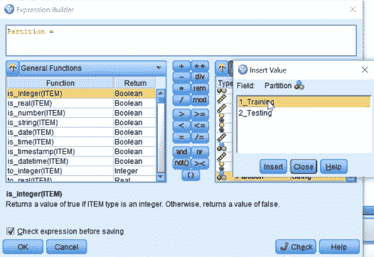
将会打开一个对话框。也单击确定。

在这个选择节点中，我们将保留值为No的人员；为此，转到表达式生成器并选择贷款变量，单击=号，然后单击字段值按钮并选择否:
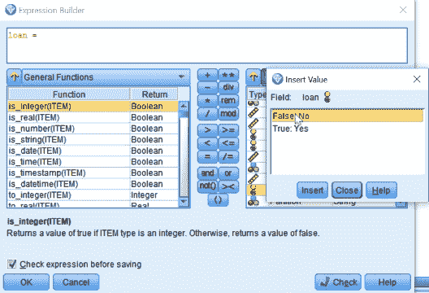
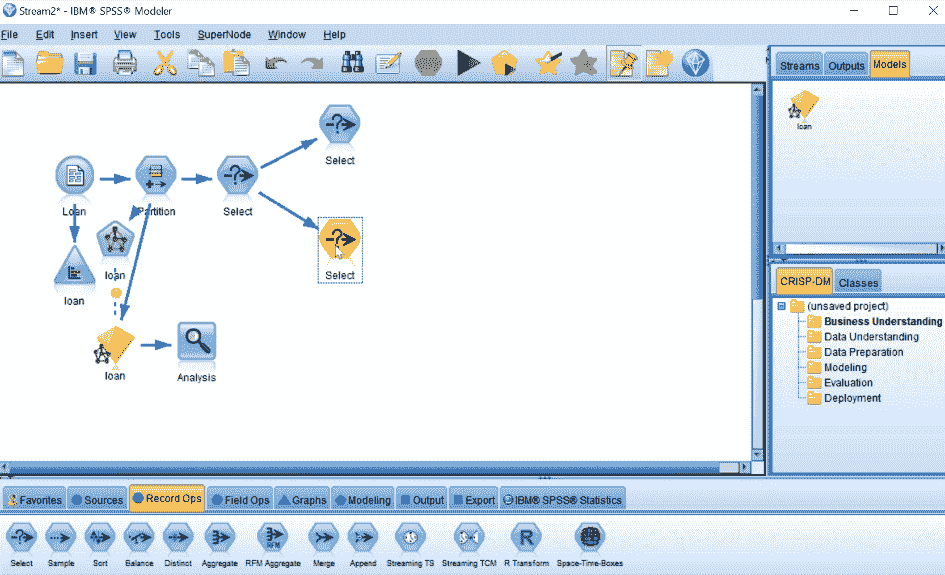
单击表达式生成器。选择贷款变量，并单击=号。单击“字段值”按钮，并选择“是”值。点击确定。所以，现在我们已经选择了所有有贷款的人。这是一个更大的人群，被过度代表了。这就把我们带到了只选择三分之一数据集的阶段。
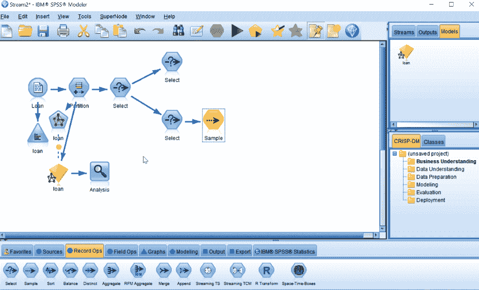
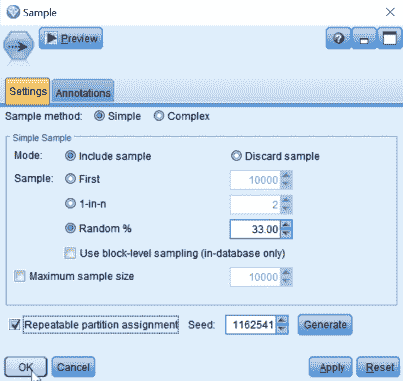
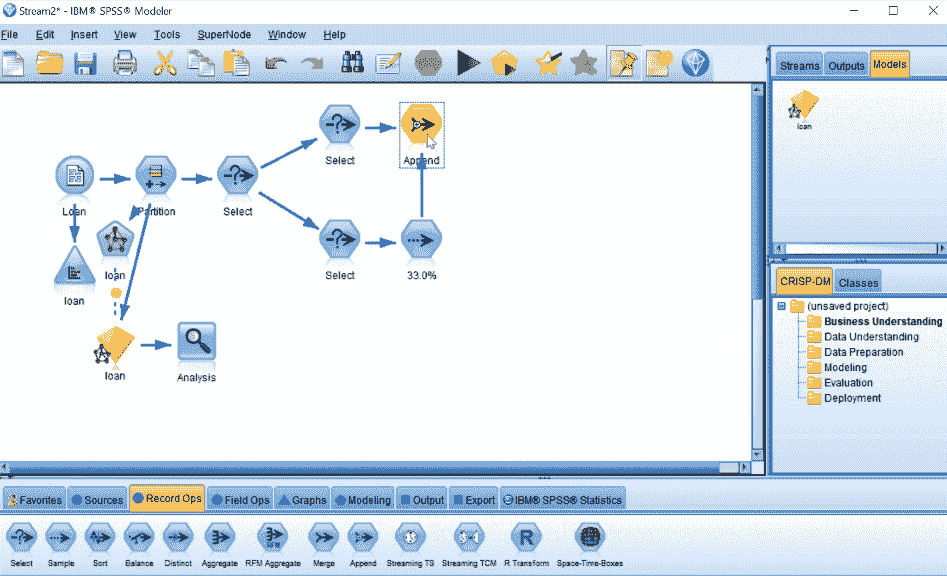


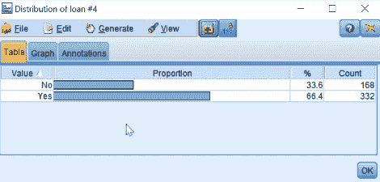
你可以看到No组约占样本的三分之一。
因此，通过对Yes节点进行欠采样，我们能够看到13%的差异。
让我们看看过采样:
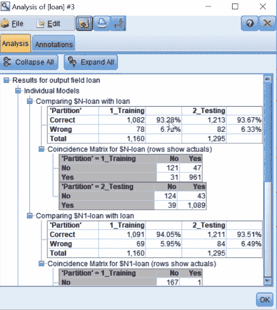
你可以看到我们现在对No组的预测有多好！我们的模型在预测单个模型的准确性方面表现得相当好。因此，我们最终平衡了数据，显然这是以yes组的错误为代价的。但是“不”组是我们关心的问题，因为它的代表人数不足。
这一章告诉我们如何修改可用于增强模型的各种选项。我们还学习了如何添加额外的字段并从这些模型中移除噪声。最后，我们对可用数据进行了采样，这有助于我们更好地理解模型。
在下一章，我们将学习如何组合模型并进一步改进它们。